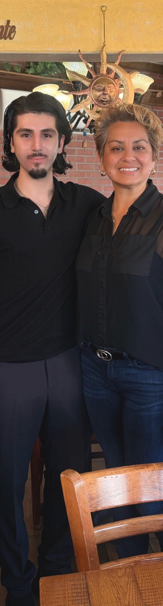

Bayati for El Cajon · District 1 · 2026
The Campaign Blueprint
Not just what we stand for — how we'll deliver it. Three priorities, each with a concrete execution plan, honest measurement, and a real mechanism.

Removing Barriers to Capital & Long-Term Small Business Success
Strengthening local small businesses by improving access to capital, guidance, and execution support — addressing the cash-flow challenges that drive a large share of business failures in El Cajon.
The problem
Many local business owners lack clear, reliable information when making high-risk financial decisions. They may be unaware of available financing programs, misunderstand loan terms, or take on debt without independent guidance.
How we deliver
Create a centralized small-business access point that consolidates information on SBA loans, local lending programs, permitting requirements, and compliance steps in plain language — reducing reliance on informal or predatory advice.
Coordinate a structured, voluntary loan-readiness and review process: pre-application support such as cash-flow analysis, financial statement preparation, and side-by-side comparisons of financing options. Owners would be encouraged to seek independent, vetted guidance before committing to debt.
Formalize partnerships with local banks, credit unions, and community development financial institutions to promote responsible lending — transparent evaluation standards and products appropriate for early-stage or undercapitalized businesses. The goal is not to guarantee loans, but to ensure owners fully understand risk, repayment timelines, and long-term impact.
Support long-term stability, not just business creation: operational support focused on budgeting, payroll planning, inventory management, and regulatory compliance — particularly during years three through five, when failure risk is highest.
How we measure it
Clear outcomes: revenue consistency, on-time debt repayment, and job retention. By improving access to capital, information, and practical support at key decision points, El Cajon can help more small businesses remain viable, hire consistently, and contribute to a stronger local economy.
Supporting Student Success Beyond the Classroom
Investing in mentorship and career-exposure partnerships that give students consistent guidance, clear expectations, and a real-world context for their education — helping increase graduation rates and make them more meaningful.
The problem
In El Cajon, nearly four in ten high school students do not graduate on time. This reflects more than academic difficulty. Many of these students are not struggling because they lack ability, but because they lack access to influential mentorship and consistent exposure to opportunity.
While districts govern schools, the city plays a critical role in shaping the environment that determines whether students stay engaged and graduate.
How we deliver
Build a city-supported mentorship and career-exposure network in partnership with schools, community organizations, and local professionals — consistent, structured interaction between students and accomplished adults who help them understand the connection between education and real career pathways.
The city's role is not to run schools, but to reinforce stability, expectation, and opportunity around students so they develop in the best circumstances.
Why this matters personally: "The person I have become today is, in large part, a reflection of the successful leaders I was fortunate enough to grow up around. That environment instilled discipline, broadened my perspective, and reinforced a level of confidence that many students in El Cajon are never allowed to develop." — Osama Bayati
How we measure it
Program-level metrics while respecting the boundaries of school governance: attendance, consistency of mentorship contact, and student goal completion.
Implementing Reasonable Political Term Limits for El Cajon
Advocating for reasonable term limits so that public office remains a position of service rather than a permanent seat of power — protecting against corruption, encouraging a new generation of leadership, and keeping officials connected to the community.
How it works
Term limits set a maximum number of terms an elected official may serve in a particular office. Once that limit is reached, the officeholder must either pursue a higher office or step down — allowing another candidate the opportunity to seek the seat.
The Police Officers Association, along with many constituents throughout the district, has expressed the belief that this process can encourage fresh perspectives, strengthen responsiveness to community concerns, and reduce the likelihood that leaders become disconnected from the people they represent.
Term limits balance two important goals: respecting experienced public servants while also ensuring leadership remains open to change. By creating regular opportunities for new candidates to enter public life, term limits help maintain competition, representation, and accountability in government.
Questions?
For availability, scheduling, and further inquiries, contact the campaign.
Like the plan?
Help put it to work. Every sign, mailer, and door-knock starts with support like yours.